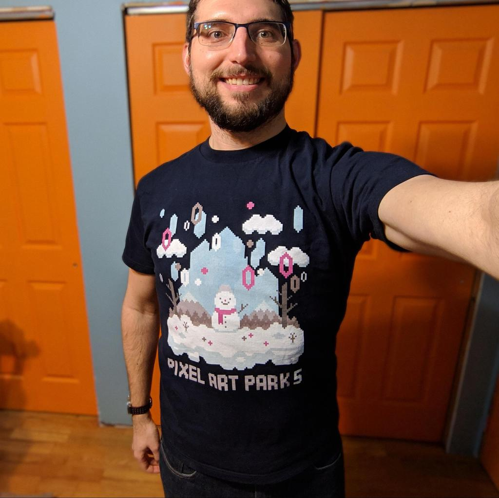

Alexandra and I attended
Pixel Art Park 5 in
Tokyo on December 9, 2018. I loved seeing so many pixel art pieces,
chiptunes, and retro-style video games in one place and meeting other
artists.
We got to the venue shortly before the festival opened and joined a long line to
enter! Organizers announced (in Japanese) that we needed ¥ 1,000 in cash to pay
for a ticket. A few minutes past 11 am, we all streamed into the building.
Inside, Alexandra and I explored
three stories
worth of art, music, games, and merch. The
ground
floor was quite crowded, so we went up to the second floor shortly after buying
our tickets and commemorative t-shirt!

In the
basement
floor, we played demos of indie retro-style video games and enjoyed the “8-bit
balloon art”.
The booths on the
ground
floor included several illustrators and a station for buying and constructing
fuse bead art. Chiptune music played in the background while the attendees
shopped and crafted.
The top floor was the largest and where we spent the most time. We strolled
through the several rows of booths, while musicians played live on-stage. I
enjoyed meeting the artists and developers in-person whose worked I’ve “liked”
online.
We bought t-shirts, prints, postcards, and pins from some of our favorite
artists. Also for sale were books, handkerchiefs, CDs, and voxel sculptures. A
few of the booths were so popular that people queued for many minutes to meet
the artist and buy merchandise. I think people even purchased a separate ticket
to meet Waneella in the morning before her booth opened to everyone in the
afternoon.
In addition to selling items, the folks at the
YMCK
booth drew free
pixel art portraits.
I really like how cute Alexandra’s portrait turned out!

We played several games. Alexandra and I both attempted to fish as much garbage
as we could out of the river in the
Hotel 337
minigame.
I met the developers of
dotpict, my favorite pixel art editor for mobile phones,
and played their
rhythm-based minigame.
We also met the developer of PICO-8 and Voxatron. It was crowded, but I enjoyed
playing
Voxatron
on the
Looking Glass volumetric display
and
Feed the Ducks
for
PICO-8.
Feed the Ducks was very cute and funny. Alexandra was even inspired to try
making her own game because of it.
After lunch, we came back to listen to more music and talks. We caught the last
minute of Waneella’s talk. After that a few artists did some live drawing of a
Christmas tree. Even though I couldn’t understand most of the banter, it was
very entertaining to watch.
We also stayed to listen to some more live music. Our favorite was
Robotprins,
which mixed guitar with chiptunes. We were uncertain when we saw the guitar,
but it worked really well together with the beeps and bloops!
Pixel Art Park as an English Speaker
I wished my Japanese skills were better a few times throughout the day. When we
first lined up to meet Waneella, we figured out that we needed a separate
ticket, but I didn't know enough Japanese to know when or where we could have
bought one. Similarly, we missed much of Waneella's talk because I couldn't
understand the printed schedule.
My interactions with the artists weren’t as in-depth as I would have liked,
partly because of the language barrier. In some cases I was able to communicate
that I like their game / app / art and had already installed it or followed
them. I said かわいい (cute) for many of the pieces we saw, and the artists did
seem to appreciate that.
Conclusions
Even if I were fluent at Japanese, I think this format isn’t the best for in-
depth conversations and trading techniques. I would love for there to be a pixel
art “unconference” for small group conversations before or after a future Pixel
Art Park. There were so many talented people in one place, and I’d love to learn
more from them.
I was encouraged to see a crowd of people expressing their love for pixel art.
It was amazing to see how many talented artists there are, as well as how many
fans (including myself) who are willing to buy physical items from artists.
Overall, I had a lot of fun at Pixel Art Park 5. I enjoyed playing the retro-
style video games, and we filled a shopping bag with pieces purchased from
artists that I admire. I hope to return to Pixel Art Park someday.